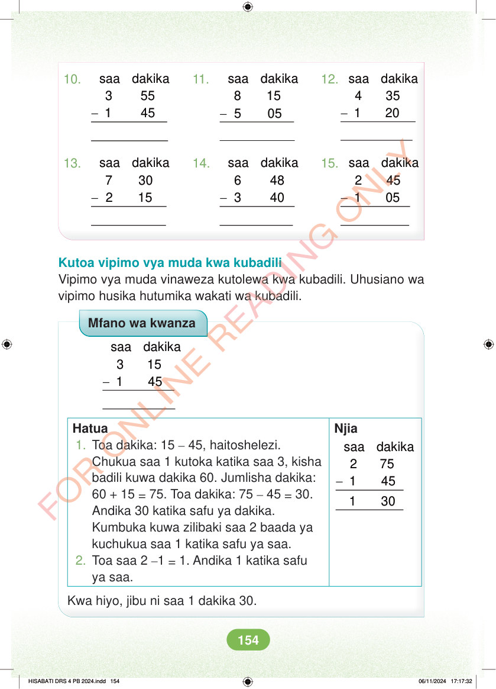

10. 11. 12. - - - saa dakika 3 55 1 45 saa dakika 4 35 1 20 saa dakika 8 15 5 05 13. 14. 15. - - - saa dakika 7 30 2 15 saa dakika 6 48 3 40 saa dakika 2 45 1 05 Kutoa vipimo vya muda kwa kubadili Vipimo vya muda vinaweza kutolewa kwa kubadili. Uhusiano wa vipimo husika hutumika wakati wa kubadili. Mfano wa kwanza - saa dakika 3 15 1 45 Hatua Njia - saa dakika 2 75 1 45 1 30 1. Toa dakika: 15 – 45, haitoshelezi. Chukua saa 1 kutoka katika saa 3, kisha badili kuwa dakika 60. Jumlisha dakika: 60 + 15 = 75. Toa dakika: 75 – 45 = 30. Andika 30 katika safu ya dakika. Kumbuka kuwa zilibaki saa 2 baada ya kuchukua saa 1 katika safu ya saa. 2. Toa saa 2 –1 = 1. Andika 1 katika safu ya saa. Kwa hiyo, jibu ni saa 1 dakika 30. HISABATI DRS 4 PB 2024.indd 154 HISABATI DRS 4 PB 2024.indd 154 06/11/2024 17:17:32 06/11/2024 17:17:32